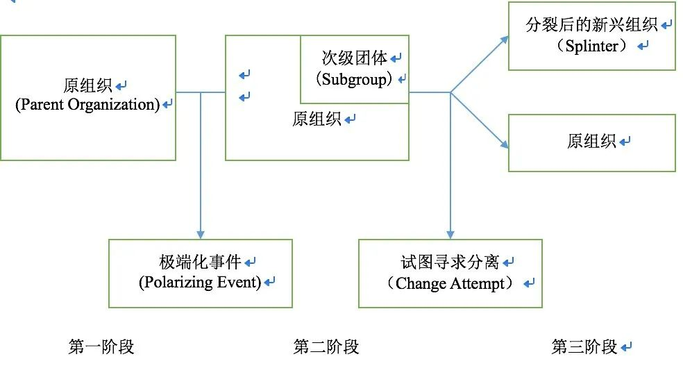

收录于合集

作品简介
【作者】 Evan Perkoski, 康涅狄格大学政治学助理教授。研究方向为武装冲突、恐怖主义与反叛乱问题。
【编译】 赖永祯（国政学人编译员，芝加哥大学研究生）
【校对】 王川
【审核】 扎西旺姆
【排版】 黄婷婷
【美编 】聂涵琳
【来源】 International Studies Quarterly , Vol.63, No.4, Dec 2019. pp. 876-889. https://academic.oup.com/isq/article- abstract/63/4/876/5572830?redirectedFrom=fulltext.
期刊简介
《国际研究季刊》（International Studies Quarterly），是国际研究协会（International Studies Association）的官方期刊，由牛津大学出版社每年发行四期，旨在发表与国际研究中重要理论性、实证性、规范性主题相关的领先学术成果。根据Journal Citation Reports的数据，2018年该期刊的影响因子为2.172。
组织内政治与武装组织的分裂
Internal Politics and the Fragmentation of Armed Groups
Evan Perkoski
内容提要
作为非国家行为体的武装组织具有内部运行不稳定与碎片化发展的特征。那么，应当如何解释从原武装组织分裂后形成的新兴组织的命运？作者指出，武装组织分裂前的内部政治形态是解释该问题的一个重要因素。对于分离后新兴组织的生存而言，围绕单一议题的组织具有吸收在斗争策略偏好一致的成员之优势；相比之下，与原组织因多项议题产生共同积怨而叛离形成的新组织易吸收背景更广泛与武装策略偏好多样的成员。但是，多样化的策略偏好容易削弱组织内的团结与合作能力，从而使组织向等级化方向发展并削弱组织的生存的可能。通过比较北爱尔兰冲突中“新共和军”与“民解”两支共和派武装的组织形态，作者论证了这一关系并指出，单纯通过寻求外部事件因素（例如与政府军的冲突或妥协关系）来解释武装组织形态的方式具有局限性；而组织自身的政治过程则影响其组织结构、成员认同与组织分裂后新兴组织的发展。作者的这一解释对于现实中提出有效的反叛乱政策，理解武装组织的形成与评估新兴武装组织的后期发展等问题上具有重要意义。
文章导读
01
引言
1913年，北爱尔兰地区成立了以寻求北爱尔兰与爱尔兰合并的武装组织“爱尔兰志愿军”（Irish Volunteers）。数十年来，该组织内部经数次分裂重组，产生诸多脱离于原“爱尔兰志愿军”的武装团体，如持强硬主张且持续时间较长的“新爱尔兰共和军”（Real Irish Republican Army, 下简称“新共和军”，该组织当前被英国列为恐怖组织）、“传承爱尔兰共和军”（Continuity IRA）以及组织形态不稳定的“爱尔兰民族解放军”（Irish National Liberation Army，下简称“民解”）等组织。事实上，（非正式）武装组织的裂解是一个普遍现象。而这种裂解的趋势有助于理解关于组织整合、控制与内部成员之前关于偏好的相互妥协的重要信息。但是作者指出，现有关于武装组织裂解的研究侧重在假定组织内的“强硬派”寻求分离时，这一情形发生的概率；但在就此后这些新组织之间的差异问题上着墨甚少。
对此，本文作者试图从组织裂解前的内部政治斗争角度探讨这一问题。作者认为，组织内成员间的意见分歧对组织分裂的形式有重要影响，因为它将影响成员做出寻求脱离或留守于组织的选择，并最终影响裂解后新组织的存续时间。如果分裂后成立的组织是围绕单一议题（如基于意识形态与战略分歧）而成立，则该组织倾向于吸收更多斗争策略偏好一致的新成员；另一方面，基于多种原因而产生的共同积怨则更倾向于吸收更多源于不同背景的人员。而他们的观点分歧则削弱组织的团结与合作程度，从而导致组织内行动疏失与自身朝等级化发展的趋势，并减少组织生存的可能性。
因此，组织内成员的观点分歧的特征对裂解后新组织的形态有重要影响。有别于从外部事件角度的解释（例如与外部对手处于敌对或和解的关系类型），作者从组织内角度讨论了其形成与分裂过程对后续新组织形态的影响。同时，对裂解后新组织的研究也有助于对一般意义上武装组织团结或分裂程度的研究，从而有助于现实中对当前诸多武装组织行为的分析。
02
**
**
“碎片化”与组织分裂的原因
当前，诸如内战、叛乱或长期的恐怖主义袭击事件在部分国家盛行，而作为非国家行为体发动冲突一方的组织形态也趋于复杂化。当这些组织产生分裂时，就会形成所谓“双重斗争”局面，即反叛团体之间的斗争与反叛团体与国家政权的斗争。既有研究多用“碎片化”这一概念概括大多数组织分裂现象，包括以下四种语境：（一）单纯描述原组织分裂导致武装组织数量扩散这一特征；（二）因原组织“权力下放”导致地方性团体壮大形成的分裂；（三）武装组织成立专属性军事团体后，这些团体朝激进化方向发展而最终导致组织分裂；（四）组织内少数成员寻求脱离原组织而导致分裂。
关于武装组织分裂的缘由可从其同政府军的关系与组织内特征两方面解释。就武装叛乱组织与政府军的关系而言，政府军的缓和举措则倾向于加剧叛乱组织内温和派与强硬派的分化；而叛乱组织领导人的妥协则促成其激进派寻求分裂，从而使其能继续开展其叛乱活动。相反，政府军针对叛乱团体的强硬举措在不同情况下可能产生弥合组织内关系，或仍然导致组织分裂的结果。而就武装组织自身特征的角度，则多从其自身领导人的构成或内部权力分工特征，外部行为体对组织内个别领导人的偏向性支持，以及冲突中的表现与内部责任分摊不平等等方面探讨这一问题。
03
组织分裂的政治学
在现有研究的基础上，作者讨论了武装组织分裂的后续影响：例如在政府军采取强硬政策压力的背景下，往往产生的多为弱小且其后续存续时间较短暂的分离团体。然而另有一些研究认为，从外部事件角度分析组织分裂仅有有限的研究意义。对此，作者认为组织分裂是是一个“群体性的动态过程”（group dynamics），即产生于“内部辩论、分歧或冲突导致其中一方认为有必要退出原组织”。

图（一） （武装）组织分裂的过程
首先，武装组织都具有相对团结的经历。在这一阶段，其内部并未形成较为紧密的异议派别。尽管非正式的内部成员关系网几乎始终存在（例如基于族群、血缘关系或使用共同的方言的联系），但这些松散的网络化团体并没有转化为开展具体行动的异议团体。同时，这种较为紧密且团结的武装组织较可能存在于成立时间较短，且组织内“小团体”尚未形成的阶段。而就分裂后出走的团体而言，则由于共同的偏好（对原武装组织的不满）促成了所谓的“团结”。
在第二阶段，组织内部分人士由于不满原武装组织的方向或具体实践而形成相似的态度，并最终形成所谓的次级团体且形成真实的认同关系。尽管人类自身寻求“亲缘性关系”的内在特质有助解释这一现象，但是往往是极端化事件（polarizing event）加剧了次级团体的形成，例如自身战略失误、社会政治条件的变化、新成员的加入导致有关人士对组织现状产生新看法等等。
最后，次级团体寻求分离，建立基于“共同理念”的新组织。作者认为，理解其共同分歧的特点有助于关注他们在寻求分离后的组织行为。而组织分离的缘由，更多是受策略选择与认知优势等方面的影响。在意识到无法在原组织内实现其分歧性目标的时候，次级团体便寻求分离而形成新的组织。
而就这些新兴分离出走的武装组织的后续发展的评估，作者认为当前研究在关注第三阶段的同时，忽视了其寻求分离前诸多背景性因素的作用；而原组织内政治环境的动态过程则有助于理解分离后新组织存续的可能性。对此，作者引入“组织利基”（Organization Niches）（即组织吸收新成员与汲取资源的环境范围）的概念，认为其规模能够影响组织自身的行动能力与其是否能满足成员需求的能力。而就叛离组织而言，新叛离组织的规模则可根据其对原组织的积怨（grievance）程度进行衡量。对原组织不满的范畴较广时，组织内因各种缘由形成的共同积怨导致较大规模的出走行动；但仅就单一议题矛盾导致的不满而叛离的组织，则其规模虽小，但其成员拥有共同的政治目标与意识形态取向。例如，极端组织“伊斯兰国”便产生于原“基地组织”部分成员在行动上寻求“更加暴力化”。但是，二者在意识形态上没有较大矛盾。相反，如果组织内成员在意识形态和武装策略上都产生矛盾，则新组织吸收的成员规模相对较大，但同时亦背景各异。
由此，作者提出如下几个假设，首先，较大规模的叛离组织具有再次出现内部分歧、斗争与成员叛变的可能；这是由于其难以满足内部成员多样化的偏好主张。而在经过较长的时间后，内部不满则会促使部分成员做出叛变等“越轨行为”，从而寻求再次变节或向政府军妥协。其次，较大规模的组织倾向于形成等级化的组织结构；其理由在于组织内领导人担忧因内部成员偏好差异导致此起彼伏的不服从现象，并寻求等级化结构加强对组织成员的控制。第三，较大规模的组织往往存续时间更短。作者这一论述受组织生态学中对企业职能部门生命周期研究的启发（专门化部门的存续时长要高于一般性部门）；就武装组织而言，大型武装组织内部除偏好差异以外，等级化趋势虽然能够维系组织生存，但是在安全威胁下，等级化组织的内部控制则使组织面临更严峻的生存危机（即组织在冲突环境下不能灵活应对安全威胁）。
04
**
**
北爱尔兰冲突中武装组织的裂解
在案例选择上，作者选取1968-1998年北爱尔兰冲突中的武装组织这一个案“检验”武装组织分裂后的组织发展变迁。在北爱尔兰冲突中，存在三方对峙的局面：管辖北爱尔兰的英国政府、主张北爱地区与爱尔兰合并的“共和派”武装组织与主张维持英国统治现状的“亲英派”民兵团体。关于其与理论假设的关系，作者认为该项冲突个案为研究武装组织裂解的动态过程提供了有效检验。首先，北爱多个武装组织的裂解存在频繁发生的情况，且对日后的局势发展产生久远影响；其次，关于北爱冲突的资料齐全性亦有助于支撑对武装组织动态发展的检验。
在个案检验的方法上，作者运用过程追踪法观察武装组织变迁是否符合其原有假设，并运用“最大相似案例”的比较策略，研究北爱冲突中“共和派”武装组织“民解”与“新共和军”的组织差异；二者均为从原爱尔兰共和派武装组织脱离而形成。尽管二者在组织特征上并非全部一致，但是在解释组织生存的问题上，两组织存在许多共同特征：首先，其组织起源均可追溯至特定关键事件的影响；其次，组织内具有“领袖人格魅力”的异见分子塑造了各自的意识形态与组织结构；同时，二者在寻取分裂前都试图在战略方向上仍试图影响原组织，因而并非出于个人恩怨而寻求叛离。此外在人员构成的主体亦为武装人员。但是二者差异在于，“民解”武装存续时间短暂，且仍存在内部斗争，甚至在五年内再次分裂为多个声称代表正统“民解”的团体。而“新共和军”存续较长，且在近年来仍然被称为“持续威胁”。
作者随后在文中从诱发分离的特定事件、叛离及新组织成立、组织环境三个方面对北爱两个武装组织进行比较分析。简而言之，就“民解”组织而言，其背景是原“爱尔兰共和军”在20世纪70年代后因长期冲突导致的战略压力，以及就报复北爱地区“血腥星期日”（Bloody Sunday）事件失败后，部分领导层寻求单边同英国政府妥协；由此导致其内部成员在意识形态与战略选择等多个方面同原组织产生冲突，故而在1972年脱离原组织而成立“民解”武装。而在其领导人“一并解决爱尔兰民族问题与社会问题”的主张下，“民解”同时吸收了包括共和派与各类支持社会革命等意识形态背景差异的人士，这也导致其内部组织形态的多样性的特征。但是，组织内部成员背景的多样性也导致其在成立后在领导层中产生派系，并蔓延至下级人员中；在20世纪80年代后，“民解”内部甚至出现了变节与告密现象。
而就“新共和军”而言，其在1998年英爱双方签署《贝尔法斯特协议》之际，因部分组织成员反对其中要求武装组织“放弃使用武力”的条款，从而脱离于支持该条款的“临时爱尔兰共和军”（PIRA，亦是“爱尔兰共和军”的分离组织）。在“临时共和军”中，就“放弃使用武力”的问题上分化形成“妥协派”与“强硬派”；由此产生所谓围绕单一议题的小型组织“新共和军”。作者分析称，“新共和军”将爱尔兰统一运动视同为“宗教事业”，组织成员具有共同的意识形态。同时，这种背景单一的特征对其组织形态产生影响：在组织结构上，“新共和军”内部实施“权力下放”，弱化等级制色彩。尽管内部仍然存在“斗争策略”问题的争论，但是这种争论的程度并没有上升至寻求“改弦更张”的层面，故内部斗争难以上升至公开的冲突。也就是说，单一意识形态背景下的武装组织虽然规模较小，但是在存续时间与活跃程度上却能产生持久影响。
此外，作者补充分析了领导人更替、社会政治环境变化和与原组织的斗争等对武装组织形态产生潜在影响的作用评估。在叛乱武装组织中，打击其重要领导人是政府反叛乱或反恐行动的重要策略。而就北爱冲突的共和派组织而言，都存在重要领导人被捕或遭袭的经历。但是作者指出，重要领导人更迭并不是以上组织产生松散或团结等形态的原因；就“民解”而言，其领袖人物西姆斯·科斯特罗（Seamus Costello）在遭暗杀前，组织内部就存在内部斗争问题。而“新共和军”领导人迈克尔·迈基维特（Michael Mckevitt）在1998年其组织成立后就被捕，但是这并未影响“新共和军”的运行。作者认为，“去中心化”的组织结构为其继续恐袭行为提供了灵活的组织形态。作者同时还评估了组织存续环境的影响。就它们与原有组织的关系而言，尽管“民解”与原“爱尔兰共和军”存在紧张关系，但作者援引英国方面的报告称，这种紧张关系并未影响“民解”在成立初期的组织扩员现象。另一方面，作者分析称，“新共和军”在1998年分裂后就在人员扩编问题上遭到主张妥协的“临时共和军”的抵制。“新共和军”在贝尔法斯特的地方领导人在2000年甚至遭到“临时共和军”射杀。就组织形成的社会政治环境而言，与“民解”在20世纪60年代成立时得到广大公众支持的环境相比，诉诸武力在20世纪90年代已经不再是北爱地区认可的解决地区问题的方案。但是这并未影响“新共和军”的成立，并在2001年后被美国政府界定为恐怖组织。
05
**
**
结论
通过引入组织生态的概念，作者认为，当组织内成员在多个议题中分裂而形成积怨时，由此产生的裂解组织倾向吸收更广泛背景的成员，具备较大的“组织利基”；而因单一议题产生的分裂下的小型组织“利基”则倾向于强化组内团结与合作关系。而作为北爱武装组织的“民解”与“新共和军”各自的发展说明了这一特征。也进而说明，单纯通过外部环境的解释难以涵盖对武装组织形态的全面理解。
作者也谈到了关于武装组织形态研究的意义。综合来看，组织生态学的概念不仅能够评估组织发展的动态过程，同时也有助于观察与评估武装组织在分裂后的后续行为；就政策意义而言，作者的解释也指出武装组织在分裂后并不一定就意味着其影响力的削弱，因而从反恐政策的角度，从组织形态上分化恐怖或叛乱组织对其后续影响具有不确定性。通过“软硬兼施”的反恐政策，同时在其内部扩大不满主张，则有助于通过使恐怖组织内部领导层产生分歧削弱其实力。此外，武装组织形态除影响组织自身存续外，亦影响其日常行为、策略选择及其同前组织的关系，这些也是武装组织研究中的重要问题。
译者评述
本文从组织内部关系的角度，分析暴力冲突中的武装组织在分裂之后的后续发展。而在现实中的反恐问题上，或许能够理解打击恐怖主义中存在“愈反愈恐”的困局：重要恐怖主义组织的妥协或分裂，并不意味着恐怖主义威胁的消除。除开大国由于地缘政治利益而在反恐政策上的偏颇外，恐怖主义团体自身的组织特性也是其中的关键：由于武装组织中重要人物的妥协并不意味着其组织“全体”的意志，因而造成组织自身的分裂，并且反而会导致其中所谓“激进派”建立更为精干化的组织，采取更具威胁性的恐怖主义行为。就作者选取的北爱尔兰冲突这一个案，尽管英爱双方签署《贝尔法斯特协议》使得持续一个世纪的问题暂告一段落，但是所剩的日趋激进化的“新共和军”仍然被当前英美各国视为恐怖主义威胁之一。
也就是说，抑制恐怖主义的滋生并不仅仅是一个军事问题，同时也是一个组织关系问题。而作者的组织内视角也适用于对当前恐怖主义组织的理解，例如脱离于“基地组织”的“伊斯兰国”就是其中的一个典型个案。另一方面，我们或许也能够得到有关的启示：组织分裂是否意味着组织能力的削弱？尽管本文聚焦于分离后“新兴组织”的存续，正如作者的组织规模视角而言，如果排除其他因素的作用，对于历史存续时间较长的武装组织而言，自身汰除内部异见成员同样也可能促成原有组织的内聚与行动能力的提升，而不仅仅适用于分裂后的新兴组织。
文章观点不代表本平台观点，本平台评译分享的文章均出于专业学习之用, 不以任何盈利为目的，内容主要呈现对原文的介绍，原文内容请通过各高校购买的数据库自行下载。
**
**
**
**
**
**
添加 “国小政”微信
获取最新资讯


国政学人
支持学术公益与知识传播
微信扫一扫赞赏作者 __赞赏
已喜欢，对作者说句悄悄话
取消 __
发送给作者
发送
最多40字，当前共字
上一页 1/3 下一页
长按二维码向我转账
支持学术公益与知识传播
受苹果公司新规定影响，微信 iOS 版的赞赏功能被关闭，可通过二维码转账支持公众号。